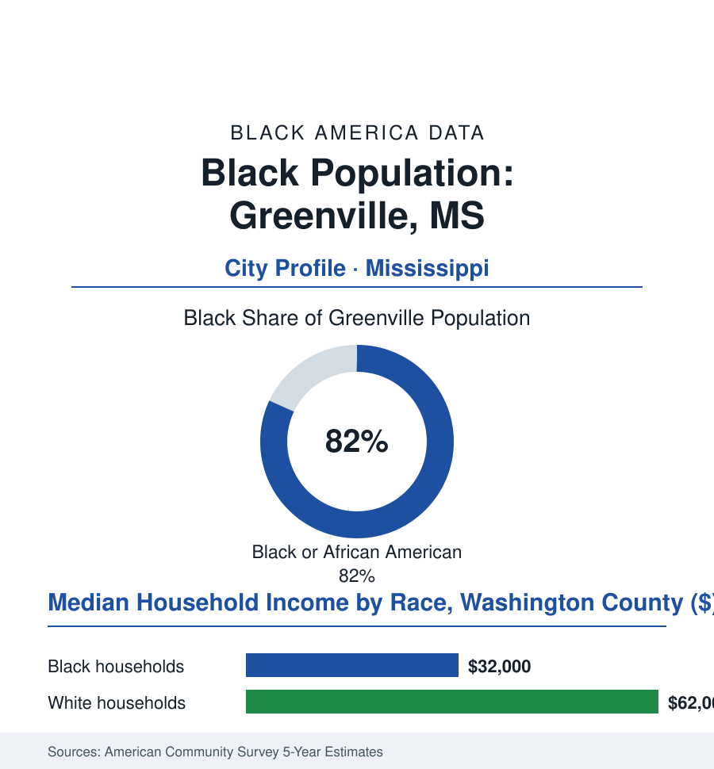

Black Cities
Black Greenville: 23,000 People in the Delta's Queen City
Greenville is the Mississippi Delta's largest city — a Black-majority river port whose writers, levees, and blues made it the region's capital in everything but law.

Greenville's Black community numbers roughly 23,000 people — about 82% of the city's 28,000 residents — in the largest city of the Mississippi Delta, the river port the region calls its Queen City. The Delta made Greenville rich on cotton and famous on literature and blues; its Black majority worked the first and authored much of the second. This article reads Greenville's numbers.
The Levee City's Two Foundings
The river founded it and the river unmade it once: the flood of 1927 — the Delta's defining catastrophe — drowned the county and wrote, in the relief-camp record, one of the era's most documented chapters of Black suffering and Black resolve (the refugees who left on the relief boats and trains forming a Delta diaspora the Chicago and St. Louis files can trace by name), after which the rebuilt Greenville consolidated as the trade capital of the cotton kingdom: the gins and compresses, the river port, the Black business district along Nelson Street in the directories' full flower (the hotels, the theaters, the professional row of the Delta's Black capital). The literary founding followed the cotton one with a completeness no other Delta city matches: the Percy family's Greenville produced, by reaction and rebellion, the region's chroniclers — and the Black Greenville of the same streets produced its own (the writers and musicians of the Nelson Street scene, the blues of the Delta's juke economy headquartered here, the newspaper tradition — the Delta Democrat Times under its famous editors arguing the region's conscience in print while the Black press's own Delta editions argued it louder). The movement years ran through Greenville on the Delta's main line (the freedom schools and the voter-registration drives of the MFDP era, the Poor People's Campaign's Mule Train passing from Marks through this orbit, the Head Start battles of the Delta ministries) — the city's Black political organization converting, in the post-1965 decades, into the municipal power of a Black-majority city: the mayor's office, the council, the school board held in the modern era by the community the cotton economy was built on. The surrounding county's rows keep the plantation economy's modern form legible — the vast mechanized farms of the Delta file worked by a fraction of the hands the cotton rows once required, the land itself the region's unresolved ledger, its Black-owned acres a small and closely counted fraction of some of the most fertile soil on earth.
The Delta's Terms, the Queen City's Ledger
The present data are the Delta file's, sharpened by the city's size: the distress rows deep and regional (a Black median household income in the low thirty-thousands in the survey data, poverty near a third of residents, the population halved from its cotton-era peak in the census series as the mechanized plantation shed its people and the young followed the diaspora's old routes), the asset rows the Queen City's own (the port still working the river, the hospital serving as the Delta's referral center — the health file's regional anchor and the county's great employer, the casinos of the river's second economy, the catfish and farm economy's processing payrolls, Delta State an hour up the road absorbing the graduates). The education file here has the Delta's emblematic modern entry: the city's schools and the state university's Delta initiatives, the literacy campaigns of the reading file's Mississippi model reaching into Washington County's classrooms, the HBCU pipelines of Jackson State and Alcorn carrying the city's seniors. The forward plans in the city's documents wager on the constants: the river's commerce, the blues-and-heritage tourism of the Delta's brand (the trail markers standing thick in Greenville's streets), the downtown's slow commercial return — and on the culture, which never left: a city this size does not produce the literature and music Greenville has by accident, and the festivals' calendars suggest the production continues.
Reading Greenville's Numbers
Twenty-three thousand people in the Delta's capital-in-fact: Greenville is the cities file's river queen — flooded, emptied, argued over, and sung about for a century, still holding the region's largest Black city on the levee's long shadow. The census counts it in decline's arithmetic. Its own archive — the books, the records, the Nelson Street memory — counts it in a currency that has never once devalued.
More in Black Cities
Black Atlanta: Population, Distribution, and Growth of a Black Metropolis
Metro Atlanta holds more than two million Black residents — roughly one in three, second only to New York. The suburban distribution, migration history, and composition of Black Atlanta in the census data.
Black New York: The Largest Black Population in America
The New York metropolitan area holds about 3.4 million Black residents — more than any metro in the nation — and the city itself about two million. The census profile.
Black Washington: The District and the Metro
The Washington metro holds about 1.6 million Black residents, and the District itself — long a majority-Black city — now records a Black share near 41 percent. The census profile.
Source: U.S. Census Bureau, 2020 Census and American Community Survey 5-year estimates; City of Greenville and Washington County; Mississippi Department of Archives and History.